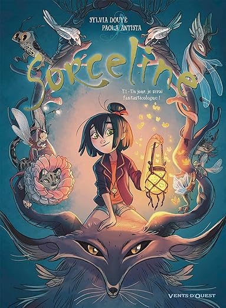

Tome 1: Un jour je serai fantasticologue !
Auteur: Sylvia Douyé et Paola Antista
Genre: Fantastique
Année: 2018
Sorceline vient d’entrer à l’école de cryptozoologie pour développer sa passion : l’étude des animaux légendaires ! Analyses de comportements, soins magiques ou dressage sont au menu. Mais les places sont chères et la compétition rude pour obtenir le précieux diplôme. En plus des gorgones, vampires et autres griffons, Sorceline va devoir apprendre à mieux connaître ses nouveaux camarades. Certains deviendront ses amis ; d’autres, ses rivaux.